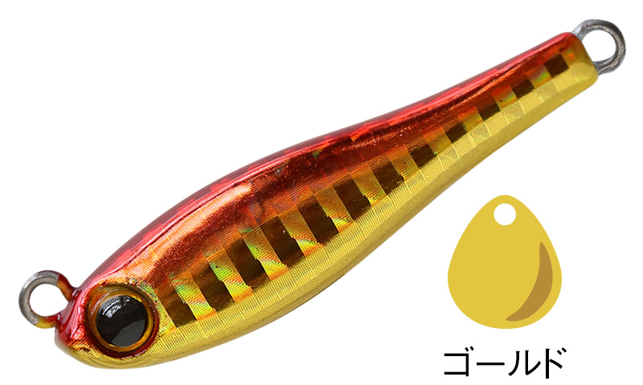
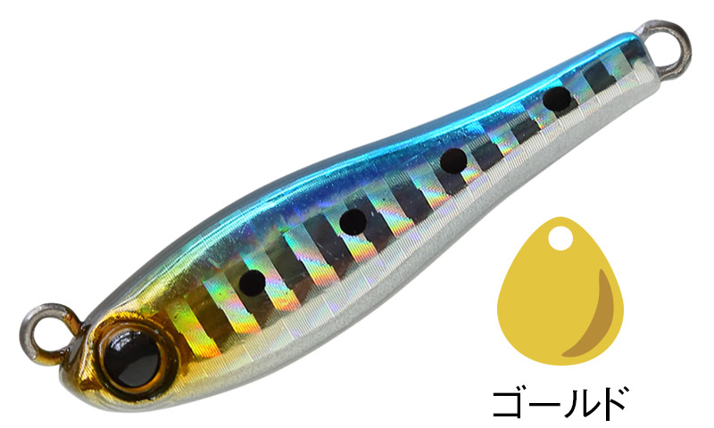
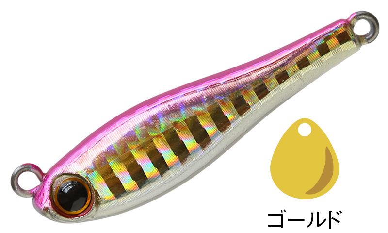
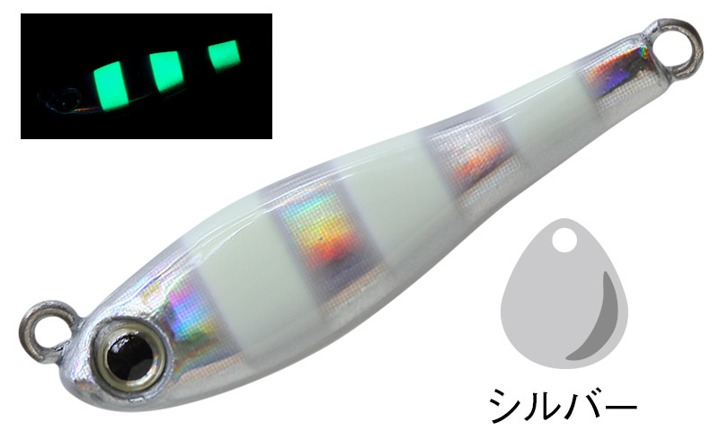

メタルマジックTG
（MetalMagic TG）
メタルマジックTGはAqua Wave（アクアウェーブ／コーモラン）のスピンテールジグです。
タングステン製ボディの高比重モデルで、同じ重さでも鉛より小さなシルエットに仕上がっています。マイクロベイトを偏食しているセレクティブな状況でも効果が高く、投げて巻くだけで多彩なフィッシュイーターを狙えます。
※2026年10月時点で、公式サイトでは「生産休止中」と表示されています。

画像出典:Vivanet（アクアウェーブ）公式HP
スペック
- メーカー
- Aqua Wave（アクアウェーブ／コーモラン）
- タイプ
- スピンテールジグ（タングステン製）
- ウエイト
- 20g／30g／40g／50g／60g
- ブレード
- 20g：#0、30g・40g：#1、50g・60g：#2
- フック
- 20g：ダブルフック、30〜60g：太軸シングルフック
- ターゲット
- シーバス・青物・サワラ・フラットフィッシュなど
- 価格
- 2,000〜3,200円（税別）
▼今すぐチェック

メタルマジックTGの特徴
タングステンで小さく重く。マイクロベイトパターンに強いスピンテールジグ
-
タングステンで極小シルエット
ボディをタングステンにしたことで、同じ重さでもより小型化。マイクロベイトだけを食べているセレクティブな状況でも効果を発揮します。
-
超高速巻きでも回らない三角形ボディ
三角形の形状と超低重心設計で、超高速巻きでもボディが回転しにくく、低速から超高速まで安定した姿勢で泳ぎます。
-
沈みが速く底取りが簡単
タングステンボディとフロントヘビーな形状で沈みが速く、ボトムまですばやく届きます。
-
専用ブレードとトラブルの少ないフック
メタルマジック専用設計のブレードが軽い引き抵抗とアピールを両立。小型ボディを生かしたテールフック1本仕様で、フッキング率を落とさずにトラブルを減らしています。
メタルマジックTGの使い方
基本は投げて底を取り、ただ巻きするだけ。テールのブレードが回転して、フラッシングと波動で誘います。
低速から超高速まで姿勢が崩れにくいので、ベイトのスピードに合わせて巻き速度を変えたり、速巻きでリアクションを狙ったりと、速度で誘い方を変えてみましょう。
メタルマジックTGの得意な状況
マイクロベイトを偏食していて、普通のサイズのルアーでは口を使わない状況。沈みが速いので、水深のある場所や流れの速い場所で底付近を探りたいときにも向いています。
ワンポイント
同じメタルマジックでも、浮き上がりの早い鉛製の「メタルマジック ショア」はオカッパリのシャロー向き、TGは小さいシルエットで深いレンジや遠くを狙いたいとき、と素材で使い分けるのがポイントです。
メタルマジックTGのサイズの使い分け
| モデル | 全長／自重 | 得意な場面 |
|---|---|---|
| 20g | ブレード#0／ダブルフック | 軽めのタックルや浅い場所、より小さいシルエットに |
| 30g・40g | ブレード#1／シングルフック | 飛距離と扱いやすさのバランスがよい中間サイズ |
| 50g・60g | ブレード#2／シングルフック | 水深のある場所や遠投、流れの速い場所に |
メタルマジックTGは20〜60gの5サイズ。水深や流れの速さ、使うタックルに合わせて重さを選び分けましょう。
人気カラー
公式ラインナップから4色を紹介します。

#A13A アカキン定番のアカキン。青物や濁りのある状況で目立たせたいときに。

#A14D イワシイワシを意識したナチュラルカラー。イワシのマイクロベイトパターンに。

#A70B ピンクバックピンクの背中で目立たせるアピール系。朝マズメや濁りに。

#A75A ゼブラグローゼブラ柄のグローカラー。夜明け前や光量の少ない時間帯に。
画像出典:Vivanet（アクアウェーブ）公式HP
メタルマジックTGに似ているルアー
-
 Zブレード
ジーク
詳細はこちら＞
Zブレード
ジーク
詳細はこちら＞
ブレード付きのメタルジグ。ブレードのフラッシングで誘う、同じジャンルの1本として。
-
 ビッグバッカー Eブレード
ジャッカル
詳細はこちら＞
ビッグバッカー Eブレード
ジャッカル
詳細はこちら＞
ブレード付きのメタル系ルアー。巻くだけで青物やシーバスを狙いたいときに。
-
 ジャックアイマキマキ
ハヤブサ
詳細はこちら＞
ジャックアイマキマキ
ハヤブサ
詳細はこちら＞
ただ巻き専用のブレードジグ。巻くだけでサワラや青物を狙いたいときに。